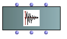
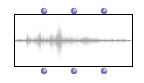
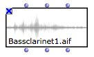
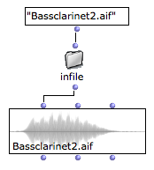
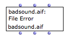
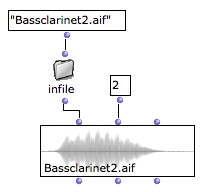
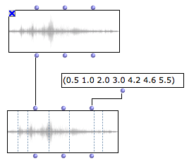

OpenMusic DocumentationHiérarchie de section : OM 6.6 User Manual > Audio > Sound Object
OpenMusic DocumentationHiérarchie de section : OM 6.6 User Manual > Audio > Sound Object
Navigation : page précédente | page suivante
Attention, votre navigateur ne supporte pas le javascript ou celui-ci à été désactivé. Certaines fonctionnalités de ce guide sont restreintes.
The Sound Object
The main audio object in OM is the SOUND object. |

The SOUND box.
|
The 3 inputs inputs/outputs of the sound box represent :
- The sound object
- The audio track
- A list of markers
Sound File Initialization
Default Initialization
If nothing is connected to the SOUND box first input, when it is evaluated, a file chooser dialog opens and allows to choose a file to load.
When initialized, the box miniview (press |

|
File Name
When the name of the box is visible (press n) the name of the file is displayed and updated at initializing the box.
After the sound is loaded, you may want to lock the box (press |

|
Accepted file formats :
OM currently accpets only AIFF or WAV audio formats.
Compressed audio formats such as MP3 are not supported.
File Pathname Initialization
A SOUND box is basically initialized with a sound file pathname, which can be connected to its first input. This pathname can be typed textually or come from another box or function. |

|
About Pathnames in OM
Sound Synthesis Results
Most of the sound synthesis tools available in OM (generally part of external libraries) return a synthesized sound pathname after synthesis. These return values are therefore suitable for connection to the SOUND box.
Initialization Error
When the file can not be loaded or found, a message may appear in the box instead of the the sound waveform. |

|
File Attachment
The SOUND object is attached to the original file existing on a computer disk. In other words, the sound data is not intern in the OM patch but always remains in the external sound file.
Conflicts or unexpected behaviour may therefore happen if the sound file is moved, renamed or removed from its original location, either by other program or by manual modifications.
SOUND boxes may not be initialized correctly if the attached file is not found at opening an existing patch.
Playback
Basic Rendering
As other musical objects, the SOUND object can be played by selecting the box and pressing space.
It can also be droped or algorithmically inserted in a Maquette.
Audio Tracks
The SOUND object have a track slot, which can be used to attach a sound to a particular audio track of the audio player. |

|
More About the Audio Player
Sound Box Evaluation
Contrary to most boxes in OM, the other inputs of the SOUND box ARE evaluated even if the fist input is connected. It is therefore possible to initialize the sound with a pathname AND setting a particular track (as shows the example above).
Markers
The third inlet/outlet of the SOUND box is a list of markers .
Markers are simple time values expressed in seconds. They can be set manually (as a list), algoritmically (if they come from other patch boxes) or using the sound editor. They are displayed as vertical lines on the sound waveform if the box miniview is visible. |

|
The SOUND Editor
Sound Box Evaluation
Contrary to most boxes in OM, the other inputs of the SOUND box ARE evaluated even if the fist input is connected. It is therefore possible to initialize the SOUND with a pathname AND setting the markers (as shows the example above).
Adding Markers to an Existing Sound
In order to add markers to an initialized (locked) sound box, you may need to create a new box connected to the self output of the first box with additional connection for the markers.

Références :
Plan :
Navigation : page précédente | page suivante
A propos...(c) Ircam - Centre Pompidou